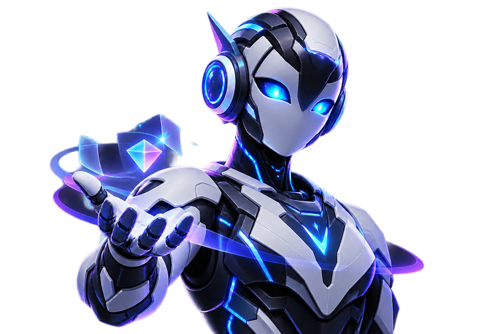

✦
Think & Create
Brainstorm ideas, write content, explain difficult topics and turn rough thoughts into structured work.
VGRO AI is a next-generation AI assistant designed to think, create, code, learn and work with you — with your own AI infrastructure.

One intelligent workspace for ideas, knowledge, code and everyday work.
Brainstorm ideas, write content, explain difficult topics and turn rough thoughts into structured work.
Understand, debug and generate code across modern languages.
Prepare VGRO to work with PDFs, documents and your own knowledge base.
Self-hosted architecture can keep inference under your control.
Streaming responses, clean markdown, code blocks, chat history and a workspace designed around conversation.
VGRO can be connected to local open-weight models through Ollama. Start on your own PC, then scale to a dedicated server when you are ready.
Open VGRO →Build locally first. Scale when the product is ready for public users.
VGRO is designed around a simple idea: powerful AI should be understandable, customizable and capable of running on infrastructure you control.